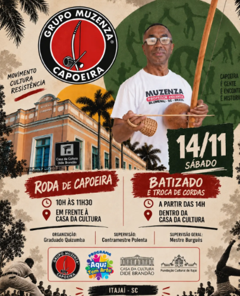

O Grupo Muzenza de Capoeira de Itajaí prepara uma programação especial nos dias 13 e 14 de novembro, com atividades voltadas à valorização e à divulgação da capoeira como manifestação cultural afro-brasileira. A agenda inclui uma apresentação durante a III Jornada de Saúde Coletiva da Univali e um encontro aberto ao público na Casa da Cultura Dide Brandão, com roda de capoeira, batizado e troca de cordas. A primeira atividade acontece no dia 13 de novembro, às 19h30, durante a III Jornada de Saúde Coletiva da Univali. Sob a condução do Graduado Quizumba, o grupo levará a capoeira à comunidade acadêmica, apresentando a prática como expressão de cultura, identidade, tradição e conexão entre pessoas. A proposta é aproximar os participantes de uma manifestação que reúne movimento corporal, música, história e conhecimentos transmitidos entre gerações. No dia seguinte, 14 de novembro, a programação continua na Casa da Cultura Dide Brandão. Das 10h às 11h30, será realizada uma roda de capoeira em frente ao espaço cultural. A partir das 14h, dentro da Casa da Cultura, acontecem o batizado e a troca de cordas, momentos importantes na trajetória dos praticantes. O batizado marca a entrada de novos alunos na comunidade da capoeira, enquanto a troca de cordas representa o reconhecimento de etapas de aprendizagem, desenvolvimento e dedicação à prática. **A história do Grupo Muzenza** O Grupo Muzenza de Capoeira foi fundado em 5 de maio de 1972, no Rio de Janeiro, por Paulo Sérgio da Silva, conhecido como Mestre Paulão. Em 1975, Mestre Burguês (Antonio Carlos de Menezes) chegou a Curitiba, no Paraná, e teve papel fundamental na expansão e na organização do grupo, desenvolvendo uma metodologia de trabalho voltada às raízes da capoeira. Desde então, a instituição ampliou sua presença em diferentes regiões do Brasil e também em outros países. O trabalho do grupo busca difundir a capoeira não apenas como atividade física ou modalidade de luta, mas como manifestação cultural, educativa e forma de expressão. Sua atuação envolve o ensino dos movimentos, dos fundamentos, da musicalidade e dos valores relacionados à prática, além da formação de novos capoeiristas e da valorização dos mestres que mantêm essa tradição. **Capoeira: cultura, resistência e ancestralidade** A capoeira é uma manifestação cultural afro-brasileira construída historicamente pela população negra no Brasil. Reúne elementos de luta, dança, música, jogo e expressão corporal, articulados em uma prática coletiva na qual os participantes aprendem por meio da observação, da convivência e da transmissão de conhecimentos. Durante parte de sua história, a capoeira foi perseguida e criminalizada pelas autoridades brasileiras, sendo associada à marginalidade e à desordem. Essa repressão esteve relacionada ao controle das práticas culturais e dos espaços de sociabilidade da população negra, especialmente no período posterior à abolição da escravidão. Apesar disso, a manifestação foi preservada e transmitida entre gerações, tornando-se uma importante referência de resistência e afirmação cultural. O reconhecimento institucional também representa uma etapa importante dessa trajetória. Em 2008, o Instituto do Patrimônio Histórico e Artístico Nacional (Iphan) registrou a Roda de Capoeira como Patrimônio Cultural do Brasil, no Livro das Formas de Expressão, e o Ofício dos Mestres de Capoeira, no Livro dos Saberes. Em 2014, a Roda de Capoeira também recebeu o reconhecimento da Unesco como Patrimônio Cultural Imaterial da Humanidade. Ao promover atividades em espaços culturais e universitários, o Grupo Muzenza contribui para manter essa tradição em circulação e ampliar o contato da comunidade com a cultura afro-brasileira. A programação de novembro representa uma oportunidade para conhecer a capoeira, acompanhar suas práticas e reconhecer a importância dos saberes e das histórias que ela preserva. A organização local está sob responsabilidade do Graduado Quizumba, com supervisão do Contramestre Polenta e supervisão geral do Mestre Burguês. As atividades na Casa da Cultura Dide Brandão são abertas ao público. 13 de novembro, às 19h30: apresentação na III Jornada de Saúde Coletiva da Univali. 14 de novembro, das 10h às 11h30: roda de capoeira em frente à Casa da Cultura Dide Brandão. 14 de novembro, a partir das 14h: batizado e troca de cordas dentro da Casa da Cultura. Organização: Graduado Quizumba. Instagram: @capoeira_muzenza_itajai_ofc
Grupo Muzenza promove encontros e celebra a capoeira em Itajaí
